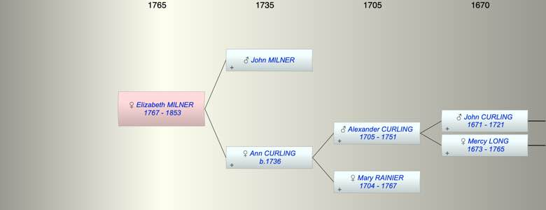

| [Index] |
| Elizabeth MILNER (1767 - 1853) |
|  |
| b. 1767 at Wapping |
| d. 1853 at Wapping aged 86 |
| Parents: |
| John MILNER |
| Ann CURLING (1736 - ) |
| Events in Elizabeth MILNER (1767 - 1853)'s life | |||||
| Date | Age | Event | Place | Notes | Src |
| 1767 | Elizabeth MILNER was born | Wapping | Note 1 | ||
| 1853 | 86 | Elizabeth MILNER died | Wapping | Note 2 | |
| Note 1: bap St John Wapping 9 May 1767 aged 20 days dau of John blockmaker and Ann ex Ancestry PR |
| Note 2: buried 25 Jan 1853 at St John Wapping |
| Created on a Mac™ using iFamily for Mac™ on 8 Oct 2023 |